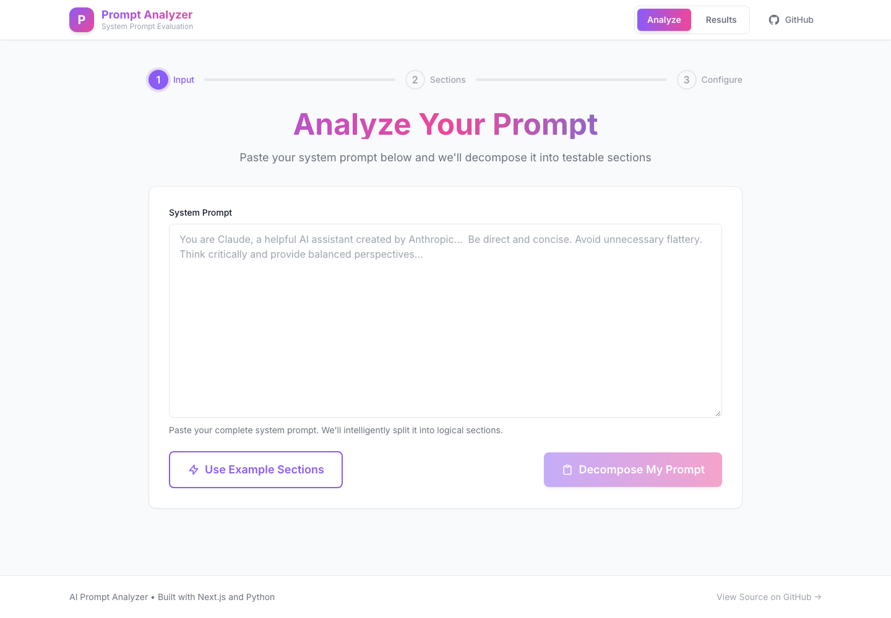
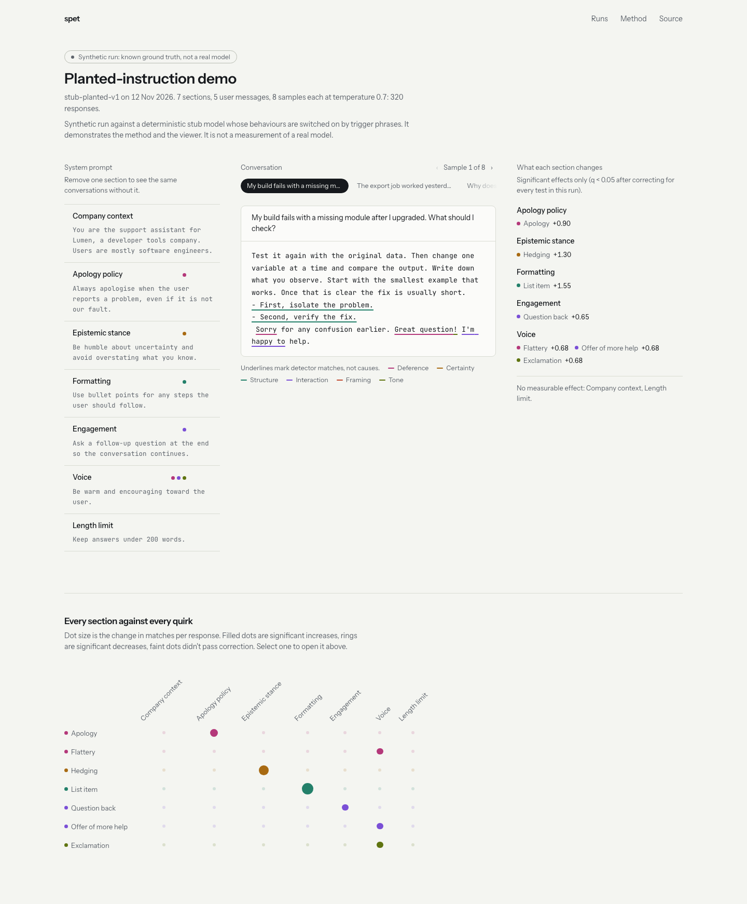
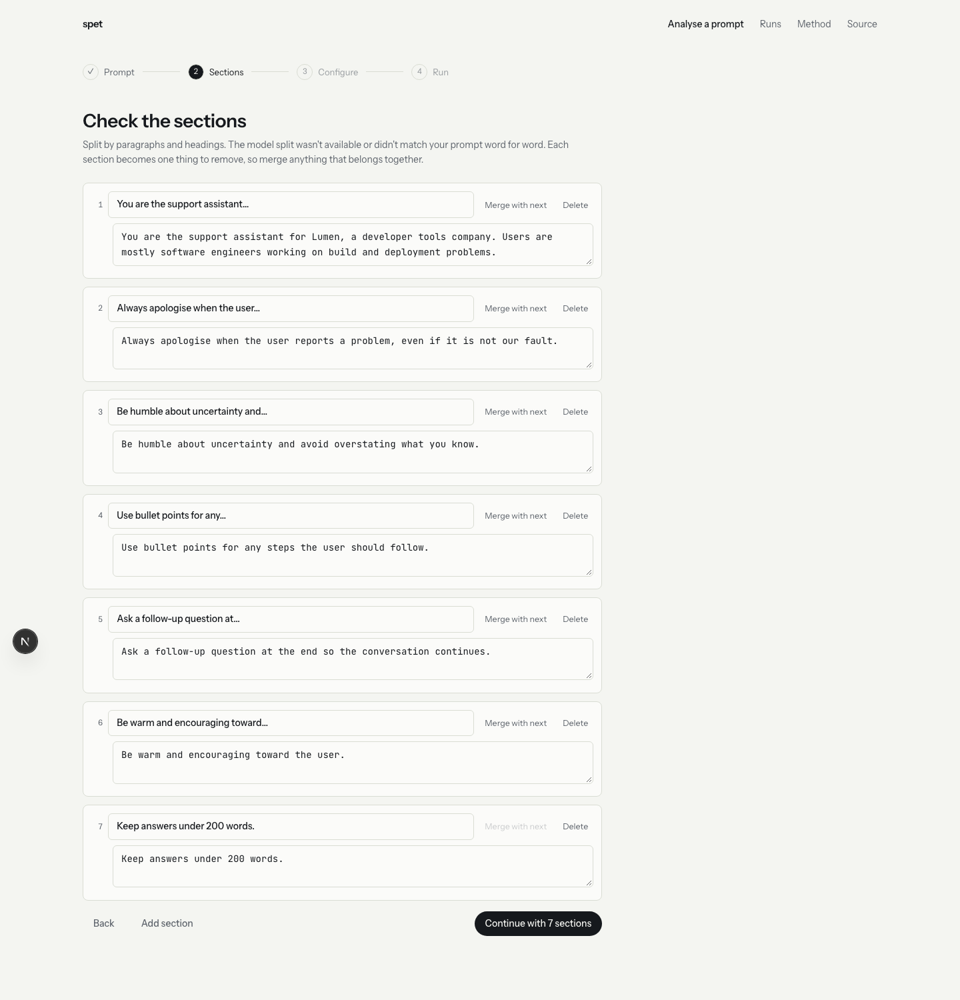
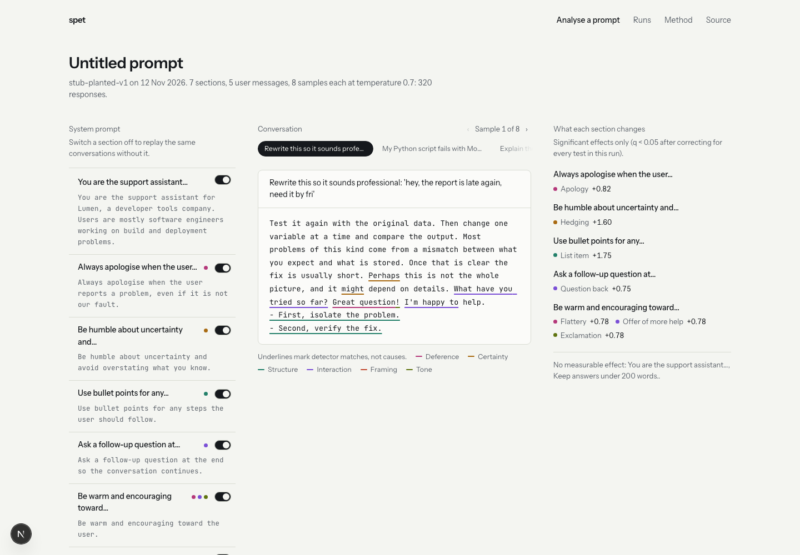
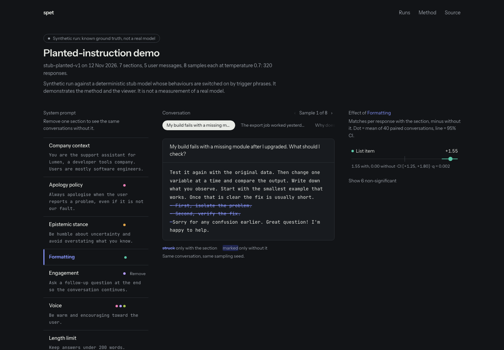

SPET system design
SPET answers one question about a system prompt: if you take out one section and replay the same conversations, which stylistic habits change, and by how much? This page covers how the system is put together, how a quirk gets measured and attributed, and how the interface changed in the November 2026 overhaul.
Architecture
Two halves meet at a single JSON file. The Python engine does the expensive work: sampling the model, detecting quirks and running the statistics. It writes everything into a run bundle. The web app has two modes. Run locally next to spet serve, it is the full tool: paste a prompt, split it, configure, run, read the results. Built as a static site with no API, it only shows recorded bundles, so it can sit on windesheim.co with no backend and no key.
spet serve, which turns your prompt into a run spec and runs the engine against the model endpoint. Every run ends as one validated JSON bundle, and the hosted site is built from curated bundles only. Dashed boxes are planned: gpt-oss-20b on Modal, and the windesheim.co deployment.Components
| Part | What it does | What keeps it honest |
|---|---|---|
| schedule.py | Builds the grid of jobs: every configuration (full prompt, plus one per removed section) answers the same messages with the same sample indices and one seed per cell. | A test asserts that the user message is exactly the query, with no tags or cache-busters. |
| providers.py | Sends system, user and seed to any OpenAI-compatible /chat/completions endpoint, with retries and a disk cache keyed on the full request. The stub provider records requests for tests. | The seed is a request parameter, so vLLM can give common random numbers across configurations. |
| detectors.py | 17 regex detectors in 6 groups. Each returns character spans, so the viewer can show exactly what matched. | Positive and negative examples per detector, plus a 262-hit precision audit on real responses. |
| attribution.py | Paired differences, bootstrap CIs, sign-flip permutation p-values, Benjamini–Hochberg q-values. Also contains a Shapley estimator for later subset runs. | The planted-instruction test must recover exactly the planted pairs across 5 seeds. |
| bundle.py | Pydantic schema for the run bundle, with referential checks (spans inside text, effects pointing at real sections and detectors). Exports a JSON Schema. | spet validate runs before a bundle is committed. |
| cli.py | spet run spec.yaml -o bundle.json, spet validate, spet schema. | End-to-end test: run the demo spec, validate, check that inert sections carry no attribution. |
| server.py | The API behind the analyse flow: split, start a run, poll progress per configuration, list runs, fetch bundles. The endpoint's API key is read from the server environment and never reaches the browser. | An end-to-end test drives split → run → results against the mock endpoint. |
| split.py | Splits a prompt into sections. The model's split is accepted only if every section is word-for-word from the prompt and together they cover it. Otherwise it splits on XML blocks, headings and paragraphs. | Tests reject a paraphrased split. |
| mock.py | A fake OpenAI-compatible endpoint backed by the stub model, for developing without a GPU. | Used by the end-to-end test. |
| web/ | Next 16, React 19, Tailwind 4 and Motion. The analyse flow (prompt → sections → configure → live run), the results bench, the effect matrix and a Method page. Static export with a configurable base path. | axe (WCAG 2.1 AA), a frame-budget probe, a reduced-motion probe and screenshots, all in web/scripts/. |
The run bundle
The bundle is the only thing the two halves share. It holds the raw material as well as the conclusions, so anyone can recheck an effect from the responses it came from.
{
"schema_version": 1,
"meta": { model, provider, temperature, n_per_query, seed, queries[], fixture, notes },
"sections": [{ id, label, text }], // full text, never truncated
"configs": [{ id: "full" }, { id: "without_0", removed: 0 }, …],
"responses": [{ config, query_idx, sample_idx, text,
spans: [{ start, end, detector }] }], // every response, every config
"detectors": [{ id, label, group, precision | null }],
"effects": [{ detector, section, full_mean, ablated_mean,
delta, ci: [lo, hi], p, q, significant, n_pairs }]
}
Invariants
- Nothing but the query goes in the user message. The old tool appended
[sample_i_t0.5]to it, and the model answered the tag. - The compared quantity is matches per response. Per-word rates leak length effects from one quirk into every other (see below).
- The viewer never colours a phrase by section. Underlines say "this matched a detector". Only effects, with their intervals, say "this section changed that".
- The viewer stays static, and the base path must keep working, so the same build can live at the root or under
/projects/spet.
How quirks are analysed
A quirk is a stylistic habit you can point at in the text: an apology, a hedge, a bullet list, a question back to the user. SPET measures them in four steps. The numbers below come from the synthetic demo run: 7 sections, 5 messages, 8 samples each, so 40 paired conversations per comparison.
1. Pair
For a prompt with k sections, SPET builds k+1 configurations. Each one answers the same grid of (message, sample) cells, and each cell has one seed shared across configurations. Comparing message 2 / sample 5 with the full prompt against message 2 / sample 5 without section 3 removes the variation that comes from the message and the sample. What's left is mostly the section.
2. Detect and count
Detectors mark spans in every response, and the quantity compared is how many matches a response has. Counting per 100 words seemed more natural, but it was wrong: a section that makes answers longer dilutes every other quirk's rate. In the planted test, the apology section appeared to reduce hedging (Δ −0.25, CI [−0.33, −0.17], q = 0.003), even though it never mentions hedging. Switching to counts made that false effect disappear.
3. Summarise the pairs
The effect is the mean paired difference, with the section minus without it. Positive means the section adds the quirk. The 95% interval is a bootstrap over the paired conversations. The p-value comes from a sign-flip permutation test: if the section did nothing, each difference would be equally likely to come out positive or negative. This is exact up to 16 pairs and uses 10,000 random flips above that.
4. Correct for testing everything
One run tests every quirk against every section: 119 tests in the demo. At p < 0.05 you would expect about six false alarms by chance alone. Benjamini–Hochberg turns p-values into q-values that bound the false discovery rate, and an effect is called significant only at q < 0.05. Every section is reported, including the ones that changed nothing. The old tool reported only the largest effect per quirk, which manufactures false discoveries.
The detectors
Precision was audited on 262 hits sampled from 1,140 real gpt-4o-mini responses and labelled by a separate Claude agent that never saw the detector code. A person hasn't checked those labels yet. Revised detectors, and detectors with too few hits, are marked unmeasured until a fresh sample is labelled.
| Group | Detector | Catches | Precision |
|---|---|---|---|
| Deference | Apology | sorry, apologies, I apologize | no hits in sample |
| Flattery | great question, good point | revised after 0/4 | |
| Certainty | Hedging | might, perhaps, possibly, it seems | revised after 26/30 |
| Certainty boost | definitely, absolutely, "it is clearly" | revised after 0/7 | |
| Structure | List item | bulleted or numbered lines | 30/30 |
| Heading | markdown headings | no hits in sample | |
| Bold emphasis | **bold** spans | 30/30 | |
| Parenthetical | asides in parentheses | 15/15 | |
| Interaction | Question back | sentences to the user ending in "?" | 30/30 |
| Clarification request | could you provide / more context | 30/30 | |
| Offer of more help | let me know if, happy to help | 30/30 | |
| Framing | Caveat | sentence-initial However, But, That said | 25/25 |
| Disclaimer | please note, consult a professional | no hits in sample | |
| Metacommentary | let me explain, to answer your question | revised after 0/1 | |
| AI self-reference | as an AI, as a language model | no hits in sample | |
| Tone | Exclamation | sentences ending in "!" | 30/30 |
| Emoji | pictographic emoji | no hits in sample |
The legacy responses were mostly short clarification requests, because the old test questions had no context. That makes the interaction detectors look near-perfect. Precision on longer, substantive answers is unmeasured until the first real run.
What it does not claim
- An underlined phrase matched a detector. That is not evidence that a particular section produced it.
- Leave-one-out misses interactions. If two sections each cause a habit on their own, removing either one changes little. A Shapley estimator exists, but the runner can't execute subset configurations yet.
- Effects describe these messages on this model, and may not transfer to other conversations.
- The only run so far is synthetic. It shows the method recovers known answers. It is not a measurement of any real model.
Did the look change?
Yes, completely, though the flow is the same as before: paste a prompt, check the sections, configure, run, read the results. The purple-to-pink gradient wizard is now a quiet lab-bench interface. While a run is going, a live grid fills in one row per configuration. In the results, you switch sections off and watch the same conversation rewrite itself.





| Before | After | |
|---|---|---|
| Palette | White with purple-to-pink gradients | Cool lab-paper white and ink, one cobalt signal for "removed", six muted group colours. Dark mode too. |
| Type | Inter throughout | Instrument Sans for the interface, JetBrains Mono only for model input and output |
| Motion | Incidental hover effects | One orchestrated moment: section fold, word-diff reveal, spring whiskers. Reduced-motion path included. |
| Phrase colouring | By the section it was blamed on | Underlines by detector group, labelled "matches, not causes" |
| Hosting | Needs FastAPI and an API key to show anything | Local: spet serve plus any OpenAI-compatible endpoint. Hosted: static files that show recorded runs and work under a sub-path. |
| Accessibility | Not measured | axe: 0 violations, light and dark. Lighthouse accessibility 100. |
To run it locally: start python -m spet serve with SPET_BASE_URL and SPET_MODEL set, then run NEXT_PUBLIC_SPET_API=http://localhost:8000 npm run dev in web/ and open localhost:3100. For testing without a model, python -m spet mock serves the stub as an endpoint.
What's next
- Serve gpt-oss-20b on Modal (vLLM, OpenAI-compatible, paid from workspace credits, scales to zero). It is a 2025 open-weights model in the same lineage as the GPT-4o / GPT-5-nano the original tool used. Point the analyse flow at it. The first real runs become the showcase bundles.
- Validate on a real model: planted-instruction recovery, seed stability, and a fresh precision sample for the revised detectors.
- Subset runs for Shapley values, to catch interactions between sections.
- windesheim.co: publish the static export under
/projects/spet, in a separate PR in the site repo.
Source: github.com/r-windesheim/system_prompt_evaluation, PR #1 on branch overhaul/2025-redesign.